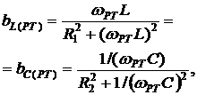

3. РЕЗОНАНС ТОКОВ
Резонанс токов
(РТ) возникает в параллельном колебательном контуре (рис. 8.5), условием которого является
равенство нулю входной реактивной проводимости bPT = bL(PT) – bC (PT) = 0 или

откуда резонансная угловая частота
 ,
,
где
- резонансная частота контура без потерь (R1 = R2 = 0);
- характеристическое сопротивление контура.

Резонансные свойства цепи с двумя ветвями R1L и R2C
(см. рис. 8.5) удобно изучать применительно к её эквивалентной схеме замещения
с тремя параллельно соединёнными ветвями с параметрами g, bL и bC (рис.
8.6, а), равными
; ; .
Тогда добротность
параллельного колебательного контура
.
Добротность Q равна также
отношению тока IС в ветви
с конденсатором (при R2 =
.
Ток I при РТ
имеет минимальное значение,
,
так как полная проводимость контура в этом режиме YРТ =
g(РТ) = Ymin, а сопротивление контура .
Амплитудно-частотная характеристика (АЧХ) тока I(f) и фазочастотная характеристика (ФЧХ) j(f) реального и идеального контуров
приведены на рис. 8.6, б и в.
Векторные
диаграммы токов ветвей и тока на
входе реального (а) и идеального (в) колебательных контуров для
режима РТ представлены на рис. 8.7, б и г; ток I1 в первой
ветви отстаёт от напряжения по фазе на угол j1, а ток I2 во
второй ветви его опережает по фазе на угол j2 (рис.
8.7, б).
При режиме РТ ток I на входе контура, как правило,
меньше токов I1 и I2 ветвей, а для идеального контура ток IРТ = 0 (рис. 8.7, г). При
подключении приёмника Rн параллельно конденсатору (при , см. рис. 8.7, а) добротность нагруженного контура снижается тем сильнее, чем меньше
Rн:
, где .
Приближённо
полосу пропускания контура определяют по формуле
или .